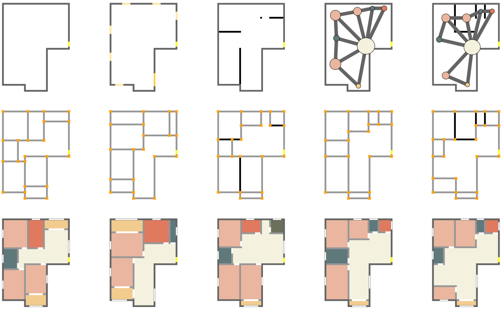

|

|
WallPlan: Synthesizing Floorplans by Learning to Generate Wall Graphs
Jiahui Sun, Wenming Wu, Ligang Liu, Wenjie Min, Gaofeng Zhang, Liping Zheng
ACM Transactions on Graphics (SIGGRAPH), 41(4), 2022.
[Project]. [Code]. [Paper].
|

|
A Novel Computation Method of Hybrid Capacity Constrained Centroidal Power Diagram
Liping Zheng, Yuyou Yao, Wenming Wu, Benzhu Xu, Gaofeng Zhang
Computers & Graphics, 97, 2021.
[Project]. [Paper].
|

|
Tailored Reality: Perception-aware Scene Restructuring for Adaptive VR Navigation
Zhi-Chao Dong, Wenming Wu, Zenghao Xu, Qi Sun, Guanjie Yuan, Ligang Liu, Xiao-Ming Fu
ACM Transactions on Graphics, 40(5), 2021.
[Project]. [Code]. [Paper].
|

|
Data-driven Interior Plan Generation for Residential Buildings
Wenming Wu, Xiao-Ming Fu, Rui Tang, Yuhan Wang, Yu-Hao Qi, Ligang Liu
ACM Transactions on Graphics (SIGGRAPH Asia), 38(6), 2019.
[Project]. [Paper].
|

|
MIQP-based Layout Design for Building Interiors
Wenming Wu, Lubin Fan, Ligang Liu, Peter Wonka
Computer Graphics Forum (Eurographics), 37(2), 2018.
[Project1]. [Project2]. [Paper].
|